Configuring OpenLP
OpenLP has many options you can configure to suit your needs. Most options are self-explanatory and we will quickly review them.
To configure OpenLP, click on
The plugins you have activated will have configure options. If all the plugins are activated there will be 10 items down the left side you can configure.
General
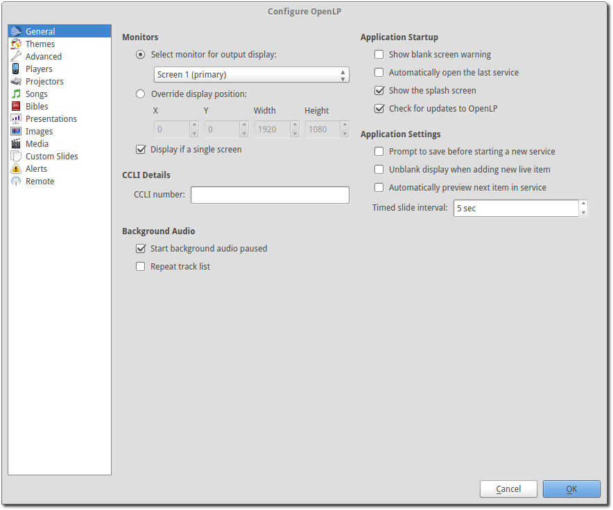Monitors
To choose which monitor you want OpenLP’s output display on, click the drop-down box and select the appropriate monitor.
Override Display Position
This setting overrides the exact position on your screen where the display output appears. If you have a custom projector setup, click the Override display position checkbox, and manually set the position of the display output using the X, Y, Width and Height values.
This setting often comes in useful when you only have a single display, and you want to be able to make the display smaller so that it does not cover your entire screen.
Display if a single screen
Checking this checkbox will show the display output in a separate window when
you only have a single monitor. To close the display window, click on it and
press the Esc key.
CCLI Details
- CCLI number:
- If you subscribe to CCLI, this box is for your License number. This number is also displayed in the Song Footer box.
Background Audio
- Start background audio paused:
- If you have a Linked Audio assigned to a song, with this box selected and when the song is displayed live, the audio will be paused until you start it using Linked Audio Control. If this box is not selected the audio will play immediately when the song is displayed live.
- Repeat track list:
- With this option selected and you are using background audio, the tracks will repeat when it reaches the end of the list (even if there is only one item).
Application Startup
- Show blank screen warning:
- When this box is selected, you will get a warning when opening OpenLP that the output display has been blanked. You may have blanked it and shut down the program and this will warn you it is still blanked.
- Automatically open the last service:
- When this box is selected, OpenLP will remember the last service you were working on when you closed the program.
- Show the splash screen:
- The OpenLP logo is displayed while OpenLP loads when this checkbox is checked. This is useful to give some indication that the program is loading.
- Check for updates to OpenLP:
- OpenLP will check to see if there is a newer version available on a regular basis when this checkbox is checked. Please note that this requires Internet access.
Application Settings
- Prompt to save before starting a new service:
- When this box is selected, OpenLP will prompt you to save the service you are working on before starting a new service.
- Unblank display when adding new live item:
- When using the blank to button with this checkbox checked, on going live with the next item, the screen will be automatically re-enabled. If this checkbox is not checked you will need to click the blank to button again to reverse the action.
- Automatically preview next item in service:
- When this box is selected, the next item in the Service Manager will be displayed in the Preview pane.
- Timed slide interval:
- This setting is the time delay in seconds. This is used to continuously loop a group of images, verses, or the lyrics in a song. This control timer is also accessible on the Using the Service Timer
Themes
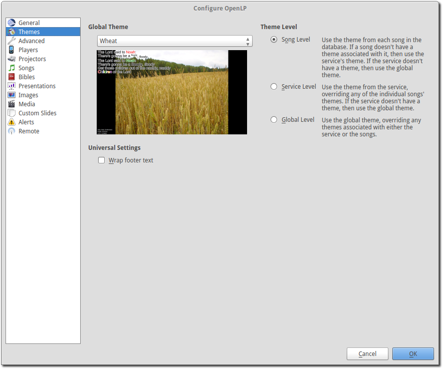Global Theme
Choose the theme you would like to use as your default global theme from the drop down box. The theme selected appears below. The global theme use is determined by the Theme Level you have selected.
Theme Level
Choose from one of three options for the default use of your theme.
- Song Level:
- With this level selected, your theme is associated with the song. The theme is controlled by adding or editing a song in the Song editor and your song theme takes priority. If your song does not have a theme associated with it, OpenLP will use the theme set in the Service Manager.
- Service Level:
- With this level selected, your theme is controlled at the top of the Service Manager. Select your default service theme there. This setting will override your Song theme.
- Global Level:
- With this level selected, all songs and verses will use the theme selected on the left in the Global Theme drop down.
Universal Settings
- Wrap footer text:
- Check this if you want text in the footer to wrap if the lines are too long to be on one line.
Advanced
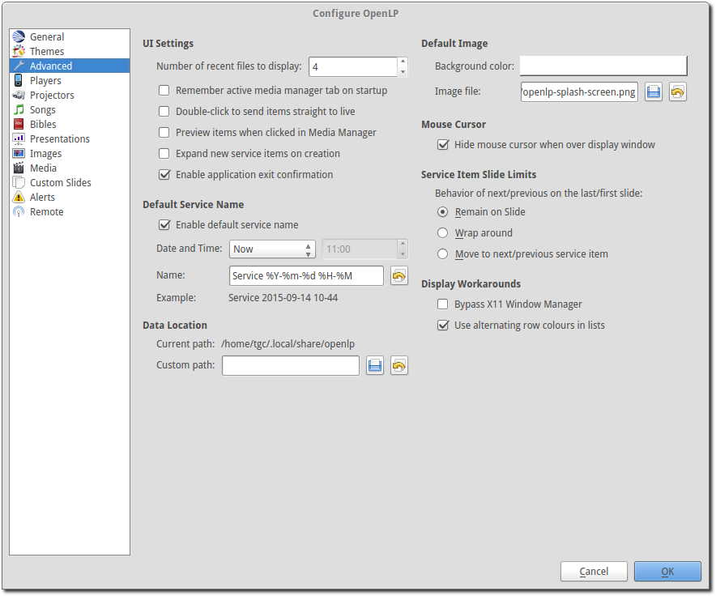UI Settings (user interface)
- Number of recent files to display:
- Set this number for OpenLP to remember your last files open. These will show under .
- Remember active media manager tab on startup:
- With this box selected OpenLP Media Manager will open on the same tab that it was closed on.
- Double-click to send items straight to live:
- With this box selected, double-clicking on anything in the Media Manager will immediately send it live instead of to Preview.
- Preview items when clicked in Media Manager:
- With this box selected, clicking any item in the Media Manager will immediately display it in the Preview pane.
- Expand new service items on creation:
- With this box selected, everything you add to the Service Manager will be expanded so you can see all the verses, lyrics and presentations, line by line. When you open OpenLP, everything will automatically be expanded in the Service Manager.
- Enable application exit confirmation:
- With this box selected, on closing OpenLP you will be presented with a dialog box to confirm closing the program.
Default Service Name
The default service name gives you the ability to have a preset name, date and time when saving your service file.
- Enable default service name:
- Checking this box will activate the use of the default service name.
- Date and Time:
- You can choose the regular day of the week and time of the service or choose Now from the dropdown for the immediate date and time to save your service file.
- Name:
- You can change “Service” to a default name of your choosing. The year, month day, hour and minute will default to what you have set for Date and Time above or if you chose Now the saved file will have the time and date that you save it.
 Revert:
Revert:- Clicking this button will erase your changes and revert to the default service name.
- Example:
- The example shows how the name, date and time will be displayed for the file name when saving the file.
Note: If the date and time format does not suit your needs and you are technically inclined, there is more information at Python.org.
Data Location
If you wish to change the default location of where OpenLP stores its data, you can enter a custom location here.
 Browse for a custom data location
Browse for a custom data location
- Revert:
- Clicking this button will erase your changes and revert to the default data location.
Default Images
- Background color:
- You can choose the background color that will be displayed when you start OpenLP.
- Image file:
- Select an image file to be displayed when OpenLP is started. Using an image file will override a background color.
Browse for an image file to display
Revert to the default OpenLP logo
Mouse Cursor
- Hide mouse cursor when over display window:
- With this box selected your mouse cursor will not be visible if you move it from Display 1 onto Display 2.
Service Item Slide Limits
These three settings control
- End Slide:
- Up and down arrow keys stop at the top and bottom slides of each Service item.
You will need to use the
Right Arrowkey or the mouse to move to the next Service Item. - Wrap Slide:
- Up and down arrow keys wrap around at the top and bottom slides of each
Service item, eg: When you reach the last slide of a song or verse and
Down Arrowyou will be back on the first slide. Likewise if you are on the first slide andUp Arrowyou will wrap-around to the last slide of the song, images or Bible verses. - Next Slide:
- Up and down arrow keys advance to the next or previous Service Item from the
top and bottom slides of each Service Item. As long as you have your songs and
verses in order, you can use the
Down Arrowto move through your service from start to finish. Using this setting makes it possible to use a presentation remote controller.
Display Workarounds
- Bypass X11 Window Manager:
- Linux and other X users may need to try toggling this flag if the main display window is causing them problems. For example with this unset, KDE users may find the main display window disappears if they switch windows. Ubuntu users using the Unity interface may find the main screen is corrupted if set. GNOME Shell users may find the window doesn’t fill the whole screen if unset. As it appears to affect different versions and distributions differently, this setting has been added, rather than try and work it out programmatically.
- Use alternating row colors in lists:
- Using alternating row colors in most cases makes it easier for the human eye to overview a list of items. Uncheck to disable.
Players
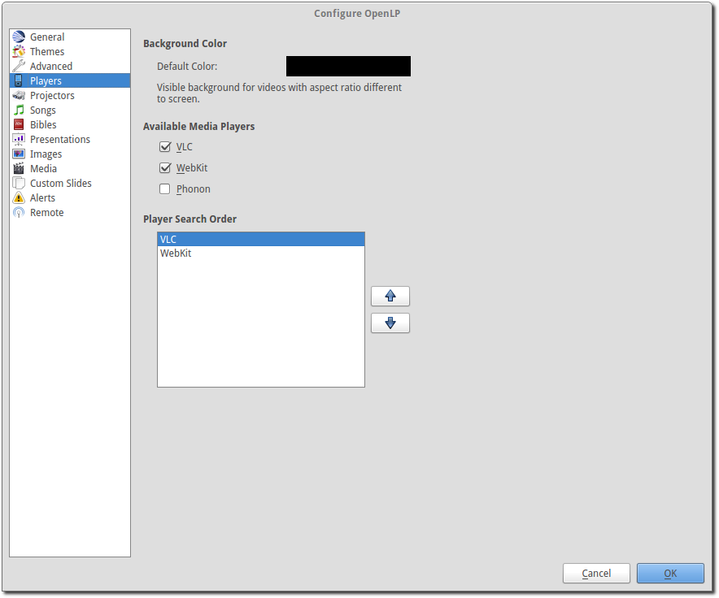Background color
Choose the background color displayed as background for videos with a different aspect ratio than the display screen
Available Media Players
Select the media players you want to be available for use. As a general rule the players control the following:
- System:
- System is an internal media player which uses your operating system’s built-in media player capabilities.
- Webkit:
- WebKit is another internal media player, which adds text-over-video to OpenLP.
- VLC:
- This uses the well-known VLC media player to show videos. VLC has a reputation of being able to handle almost any video or audio format.
Note: You must have VLC installed for the VLC option to be available. On Windows you must install the 32-bit version of VLC. On Mac OS X you must install the 64-bit version of VLC.
Player Order
Determines the preference order of the selected media players. The order is changed by selecting one of the available players and using the Down or Up button to change the position of the player.
Projectors
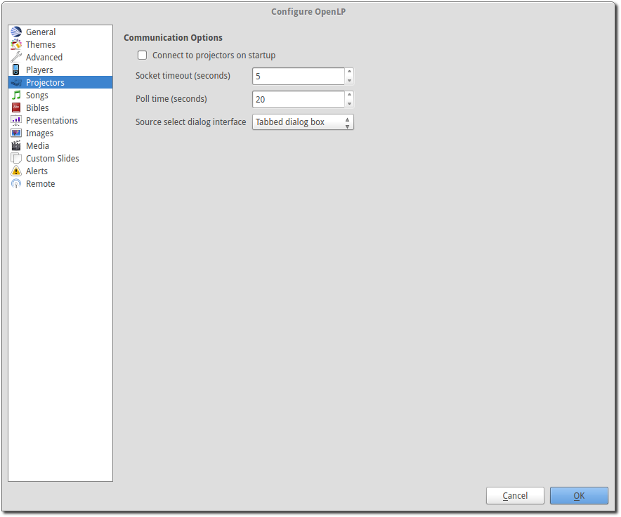Communication Options
The options available are:
- Connect to projectors on startup:
- Check if you want to attempt to connect to all projectors when OpenLP starts.
- Socket timeout (seconds):
- Time in seconds to wait for the projector connection. Available options are 2 to 10 seconds.
- Poll timeout (seconds):
- How often to poll the projector for status information. Available options are 2 to 60 seconds. For quicker response on the status icons, set to a lower value. If you have network congestion, you may need to use a higher value.
- Source select dialog interface:
- Select whether you want all video source options on one dialog page or to use tabs to consolidate the inputs based on video group.
Songs
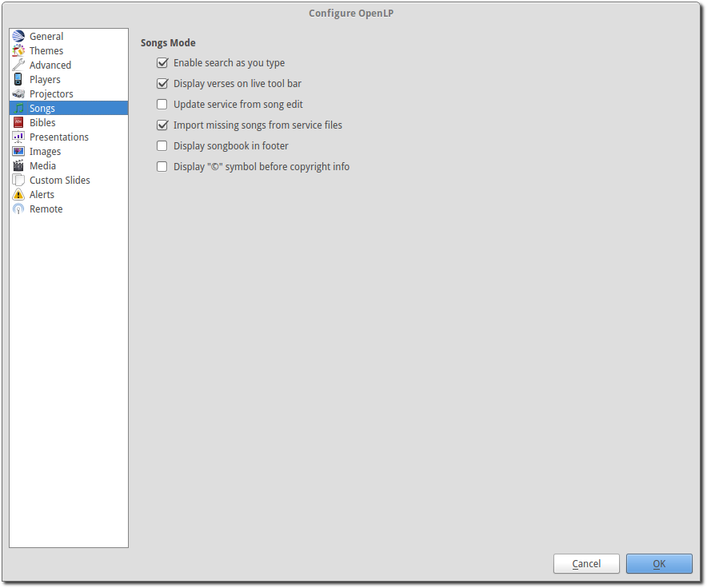Songs Mode
- Enable search as you type:
- With this box selected, Media Manager/Songs will display the song you are searching for as you are typing. If this box is not selected, you need to type in your search box and then click on the Search button.
- Display verses on live tool bar:
- With this box selected, a Go To drop down box is available on the live toolbar to select any part of the verse type you want displayed live.
- Update service from song edit:
- With this box selected and you edit a song in the Media Manager, the results will also change the song if it is added to the Service Manager. If this box is not selected, your song edit changes will only be available in the Service Manager if you add it again.
- Import missing songs from service files:
- With this box selected, when you open a service file created on another computer, or if one of the songs are no longer in your Media Manager, it will automatically enter the song in your Songs Media Manager. If this box is not checked, the song is available in the service but will not be added to the Media Manager.
- Display songbook in footer:
- With this box selected the songbook name and number for songs (if available) will be shown in the footer.
- Display “©” symbol before copyright info:
- With this box selected the copyright symbol will be displayed in the footer before the copyright information.
Bibles
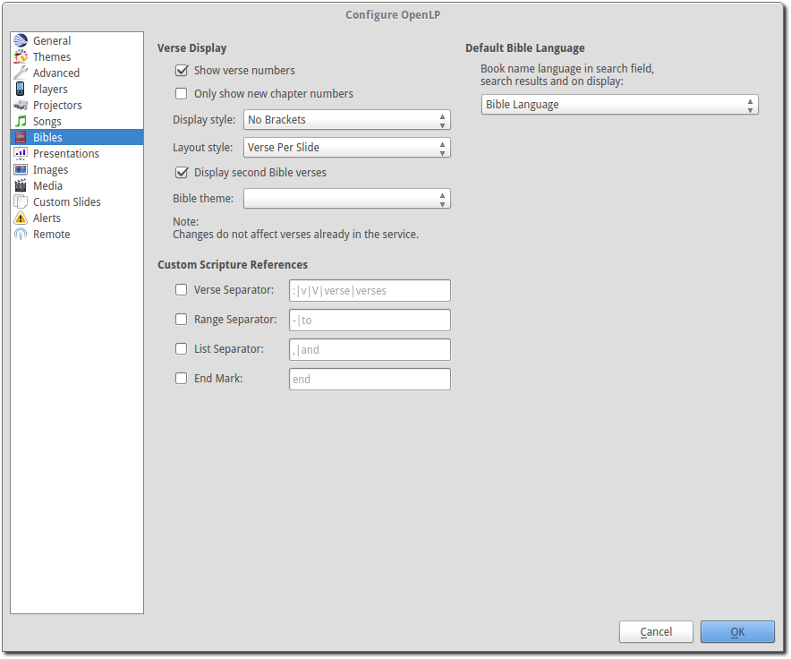Verse Display
- Show verse numbers:
- With this box selected verse numbers are always shown, deselect to hide verse numbers.
- Only show new chapter numbers:
- With this box selected, the live display of the verse will only show the chapter number and verse for the first verse, and just the verse numbers after that. If the chapter changes, the new chapter number will be displayed with the verse number for the first line, and only the verse number displayed thereafter.
- Display style:
- This option will put brackets around the chapter and verse numbers. You may select No Brackets or your bracket style from the drop down menu.
- Layout style:
- There are three options to determine how your Bible verses are displayed.
- Verse Per Slide:
- Will display one verse per slide.
- Verse Per Line:
- Will start each verse on a new line until the slide is full.
- Continuous:
- Will run all verses together, separated by verse number and chapter, if chapter is selected to show above. This will only add the next verse if it wholly fits on the slide. If it does not fit, it will begin a new slide.
Note: Changes do not affect verses already in the service.
- Display second Bible verses:
- OpenLP has the ability to display the same verse in two different Bible versions for comparison. With this option selected, there will be a Second choice in the Bible Media Manager to use this option. Verses will display with one verse per slide with the second Bible verse below.
- Bible theme:
- You may select your default Bible theme from this drop down box. This selected theme will only be used if your Theme Level is set at Song Level.
Note: Changes do not affect verses already in the service.
Custom Scripture References
Here you can change the default separators used in the scripture references. The default values are shown in gray when the custom separators has not be enabled and nothing has been entered. Note that the default separators can change if the language of OpenLP is changed.
Verse Separators: Enable to enter a custom verse separator.
Range Separators: Enable to enter a custom range separator.
List Separators: Enable to enter a custom list separator.
End Mark: Enable to enter a custom end marker.
Default Bible Language
Choose the language of the bible books. The options are:
- Bible Language:
- The language of the books will be determined by the language of the bible.
- Application Language:
- The language of the books will be determined by the language set for OpenLP.
- English:
- The language of the books will be set to English.
Presentations
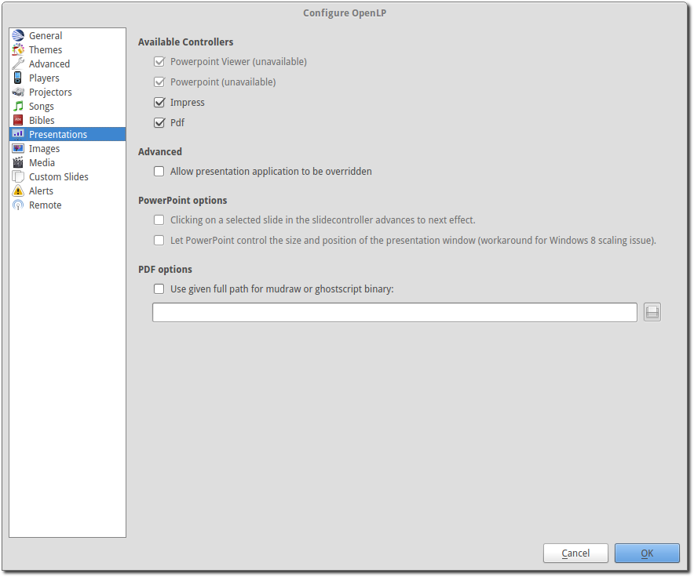Available Controllers
OpenLP has the ability to import OpenOffice Impress or Microsoft PowerPoint presentations, and use Impress, PowerPoint, or PowerPoint Viewer to display and control them from within OpenLP. Please remember that in order to use this feature you will need to have one of the above-mentioned applications installed, due to the fact that OpenLP uses these application to open and run the presentation.
Support of PDF is bundled with OpenLP on Mac OS X and Windows. On Linux you will
need to install mupdf (recommended) or ghostscript.
Advanced
- Allow presentation application to be overridden:
- With this option selected, you will see Present using area with a dropdown box on the Presentations toolbar in Media Manager which gives you the option to select the presentation program you want to use.
PowerPoint options
These options are only available if PowerPoint has been detected.
- Clicking on a selected slide in the slidecontroller advances to next effect:
- When this is enabled it is possible to go to the next effect of a slide by clicking the slide in the slidecontroller. The default behavior is to restart the slide.
- Let PowerPoint control the size and position of the presentation window (workaround for Windows 8 scaling issue):
- Windows 8 and 10 can on computers with multiple monitors use scaling to make windows look the same size on different monitors. Unfortunately this can cause issues with how OpenLP places and resizes the PowerPoint presentation window. Check this box to enable the workaround which let PowerPoint control the presentation window. When you enable this you must setup PowerPoint to present to the correct monitor.
PDF options
- Use given full path for mudraw or ghostscript binary:
- Enable this if you want to enter a custom path for mudraw or ghostscript.
Images
Provides border where an image is not the correct dimensions for the screen when it is resized.
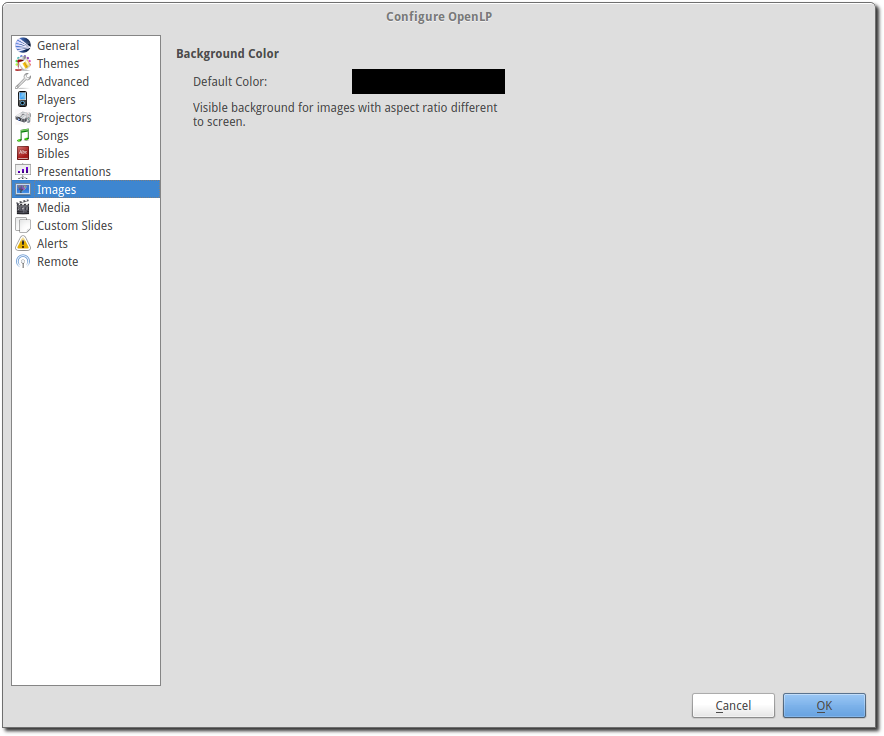- Default Color:
- Click on the black button next to Default Color. You have the option of choosing among the colors you see or entering your own.
Media
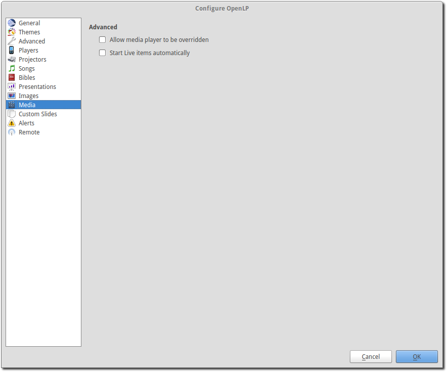Advanced
- Allow media player to be overridden:
- With this option selected, you will see Use Player: area with a dropdown box on the Media tool bar in the Media Manager which gives you the option to select the media player you want to use.
- Start Live items automatically:
- With this option selected media items will start to play automatically when sent live.
Custom
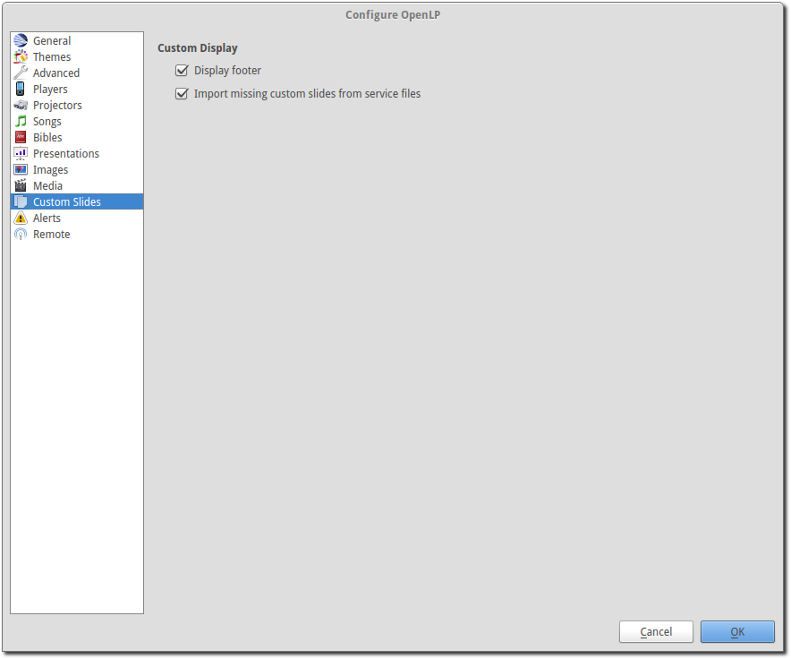Custom Display
- Display Footer:
- With this option selected, your Custom slide Title will be displayed in the footer.
Note: If you have an entry in the Credits box of your custom slide, title and credits will always be displayed.
- Import missing custom slides from service files:
- With this box selected, when you open a service file created on another computer, or if one of the custom slides are no longer in your Media Manager, it will automatically enter the custom slide in your Custom Slide Media Manager. If this box is not checked, the custom slide is available in the service but will not be added to the Media Manager.
Alerts
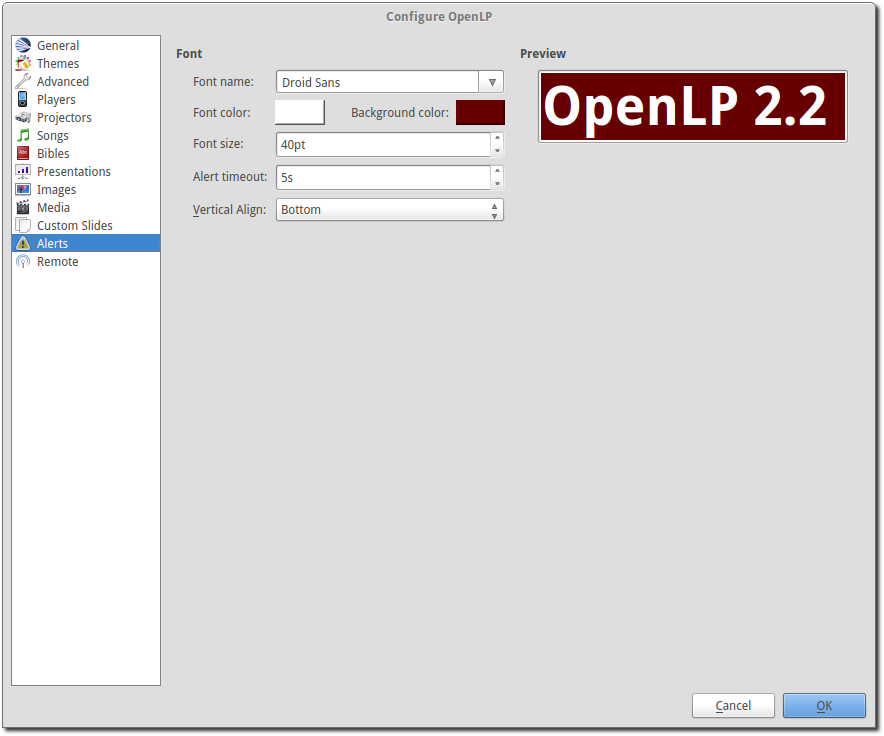Font
- Font name:
- Choose your desired font from the drop down menu
- Font color:
- Choose your font color here.
- Background color:
- Choose the background color the font will be displayed on.
- Font size:
- This will adjust the size of the font.
- Alert timeout:
- This setting will determine how long your Alert will be displayed on the screen, in seconds.
- Vertical Align:
- Choose the location where you want the alert displayed on the screen, Top, Middle or Bottom.
- Preview:
- Your choices will be displayed here.
Remote
OpenLP gives you the ability to control the Service Manager or send an Alert from a remote computer through a web browser. This could be useful for a nursery or daycare to display an Alert message or, use it as an interface to control the whole service remotely by a visiting missionary or worship team leader.
Stage view gives you the opportunity to set up a remote computer, netbook or smartphone to view the service being displayed in an easy to read font with a black background. Stage view is a text only viewer.
The remote feature will work in any web browser that has network access whether it is another computer, a netbook or a smartphone. You can find more information about this feature here: The Web Remote.
Note: To use either of these features, your computers will need to be on the same network, wired or wireless.
Server Settings - Non Secure
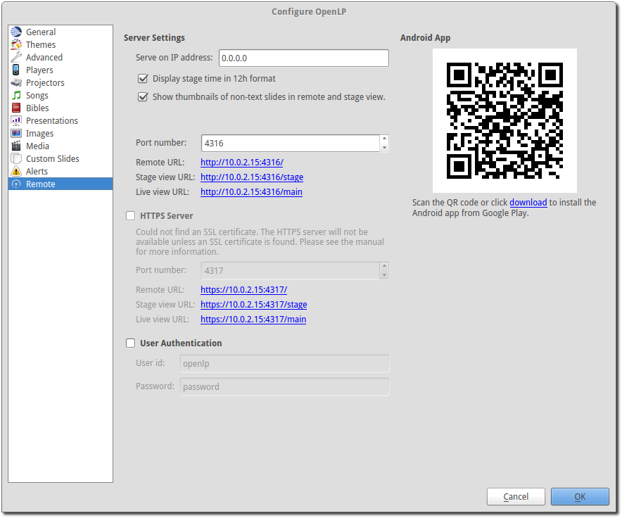- Serve on IP address:
- Put your projection computer’s IP address here or use 0.0.0.0 which will display your IP address links below.
- Display stage time in 12h format:
- This setting displays the time in stage view in 12h or 24h format.
- Port Number:
- You can use the default port number or change it to another number. If you do not understand this setting you should leave it as is.
- Remote URL:
- Using the remote URL, you have the ability to control the live service from another computer, netbook or smartphone that has a browser.
Note: This URL and port number are also used to map the value for OpenLP’s Android app.
- Stage view URL:
- Using stage view gives you the ability, using a remote computer, netbook or smartphone, to view the live service display in a basic black and white format. This URL shows the address you will use in the remote browser for stage view.
Server Settings - Secure
These options are identical in meaning to the ones documented in Server Settings - Non Secure. The only difference is these require an SSL cetificate to provide the security. Instructions for creating and installing a certificate are documented in Generate SSL certificate Generating and Installing a Certificate.
Changing from a Secure to Non Secure setup requires a restart of OpenLP.
User Authentication
This option allows the additional security for update functions via the web or android interfaces. Once the userid and password have been accepted then updates will be possible for duration of the web session. This option can be changed without the need to restart OpenLP.
Generating and Installing a Certificate
To make the Remote access run in a secure manner ssl certificates need to be provided to OpenLP. This is completely optional. On Linux you will need the “openssl” package installed. On Mac OS X openssl should be installed by default. On Windows you will need to download OpenSSL for Windows.
First create a configuration file for OpenSSL named openlp.cnf:
#-------------openssl.cnf----------------
[ req ]
default_bits = 1024 # Size of keys
default_keyfile = key.pem # name of generated keys
default_md = des3 # message digest algorithm
string_mask = nombstr # permitted characters
distinguished_name = req_distinguished_name
[ req_distinguished_name ]
# Variable name Prompt string
0.organizationName = Organization Name (company)
organizationalUnitName = Organizational Unit Name (department, division)
emailAddress = Email Address
emailAddress_max = 40
localityName = Locality Name (city, district)
stateOrProvinceName = State or Province Name (full name)
countryName = Country Name (2 letter code)
countryName_min = 2
countryName_max = 2
commonName = Common Name (hostname, IP, or your name)
commonName_max = 64
#-------------------Edit this section------------------------------
countryName_default = --
stateOrProvinceName_default = None
localityName_default = Everywhere
0.organizationName_default = OpenLP
organizationalUnitName_default = Remote
commonName_default = 0.0.0.0
emailAddress_default = openlp@localhost
Then generate your keys and certificate:
echo openlp | openssl genrsa -passout stdin -des3 -out openlp.key 1024
cp openlp.key openlp.key.bak
echo openlp | openssl rsa -passin stdin -in openlp.key.bak -out openlp.key
openssl req -new -key openlp.key -out openlp.csr -config openlp.cnf -batch
openssl x509 -req -days 365 -in openlp.csr -signkey openlp.key -out openlp.crt
The crt and key files need to then be placed in {data}/remotes directory.
Android App
You can quickly find and download the OpenLP Android application using your Android device barcode scanner or by clicking on the download link. More details on the OpenLP Android application can be found at Android App.
Finding your IP address
If the Remote or Stage view URL are not showing you can manually find these settings. To find your projection computer’s IP address use these steps below.
Windows:
Open Command Prompt and type:
C:\Documents and Settings\user>ipconfig
Press the Enter key and the output of your command will display the
adapter IP address. The IP address will always have a format of xxx.xxx.xxx.xxx
where x is one to three digits long.
Linux:
Open Terminal and type:
linux@user:~$ifconfig
Some Linux systems will require the full path:
linux@user:~$/sbin/ifconfig
Press the Enter key. This will display a fair amount of technical
information about your network cards. On most computers, the network card is
named “eth0”. The IP address for your network card is just after “inet addr:” in
the section with your network card’s name. The IP address will always have a
format of xxx.xxx.xxx.xxx where x is one to three digits long.
OS X 10.6 or 10.5
From the Apple menu, select . In the Network preference window, click a network port (e.g., Ethernet, AirPort, modem). If you are connected, you’ll see its IP address under “Status:”.
With these two settings written down, open a web browser in the remote computer and enter the IP address followed by a colon and then the port number, ie: 192.168.1.104:4316 then press enter. You should now have access to the OpenLP Controller. If it does not come up, you either entered the wrong IP address, port number or one or both computers are not connected to the network.